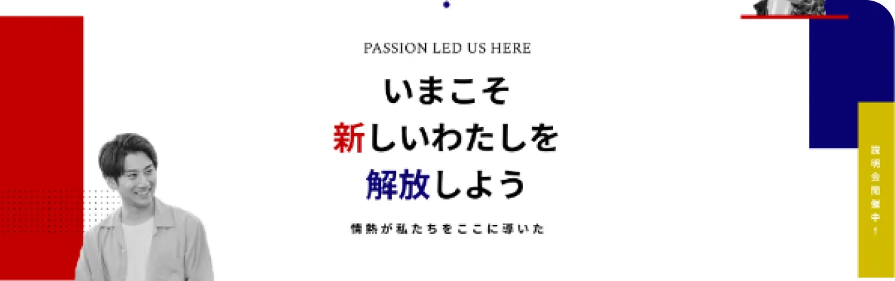
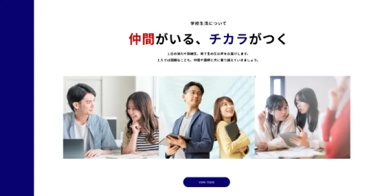
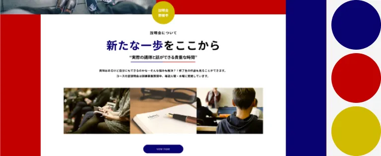
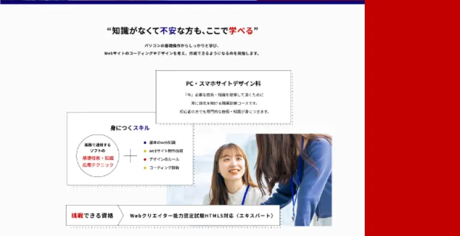
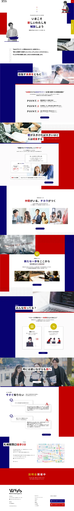
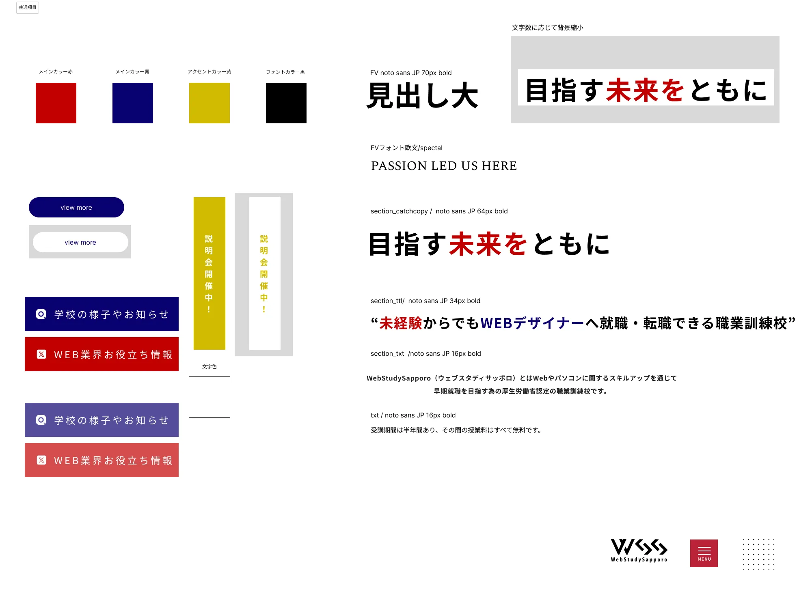

[MY WORK]

コンセプト
CONCEPT
コンセプトは「情熱の開放」。あくまでも会社なので学校感を出しすぎずでも硬くなりすぎず。
職業訓練校のため硬くはなりすぎず、でもポップにもなりすぎず、ここなら未経験でも入校してやっていけそう！と思わせれる雰囲気に作成しました。ノートを見ているかのようなデザインと特に注目してほしい説明会へのリンクなどは目立つような配色にしました。

ターゲット
TARGET
- 20～30代の男女
- webの仕事に興味がある方
- 仕事を探している方
- 説明会に興味がある方
- サイトを見て説明会に行きたいと思わせたい
- webサイトからのwssの認知度アップ

サイトを通して認知度アップ、サイトからの説明会参加者アップが目標
カラー
COLOR
会社感を残しつつ学校感も出す。
重厚感を抑えつつポップになりすぎないよう配慮。赤、青はコンセプトの「情熱」を、黄は「開放」のイメージも担っています。

振り返り
LOOKING BACK
離脱率を意識してのデザイン
訓練校というのを知らない人も最後までしっかりと読んでもらえるように意識してデザインをしました。下層ページまでしっかりと作るのは初めてだったのでトップページの雰囲気を残しつつ作るのが難しかったです。また、リンクや相対パスの設定のしかたを学べました。

サイト全体

共通項目

- 製作時間
- 3週間
- レスポンシブ
- 非対応
1920pxで閲覧想定 - 使用ツール
- Figma、Photshop